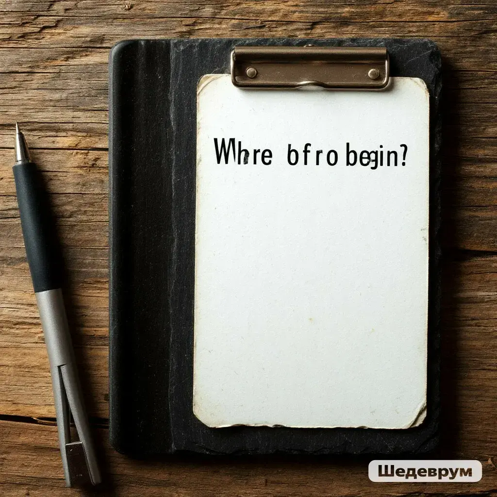
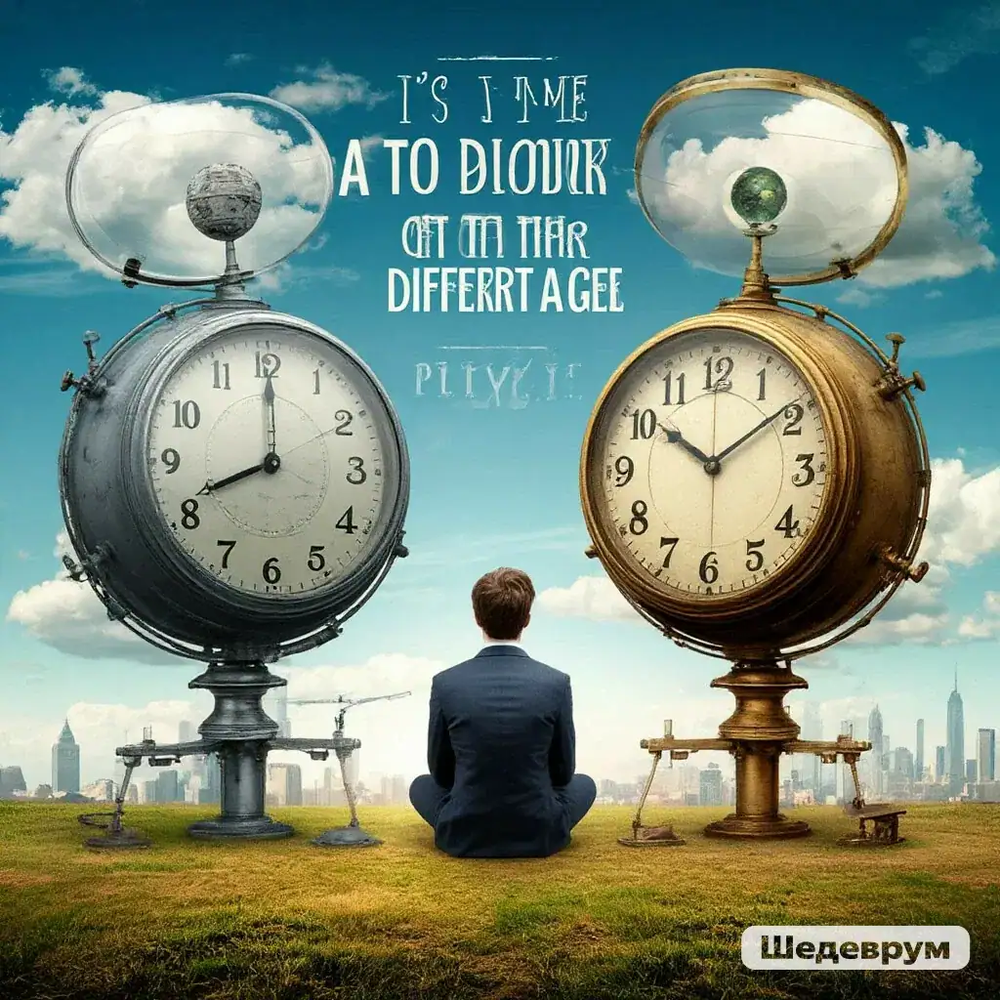
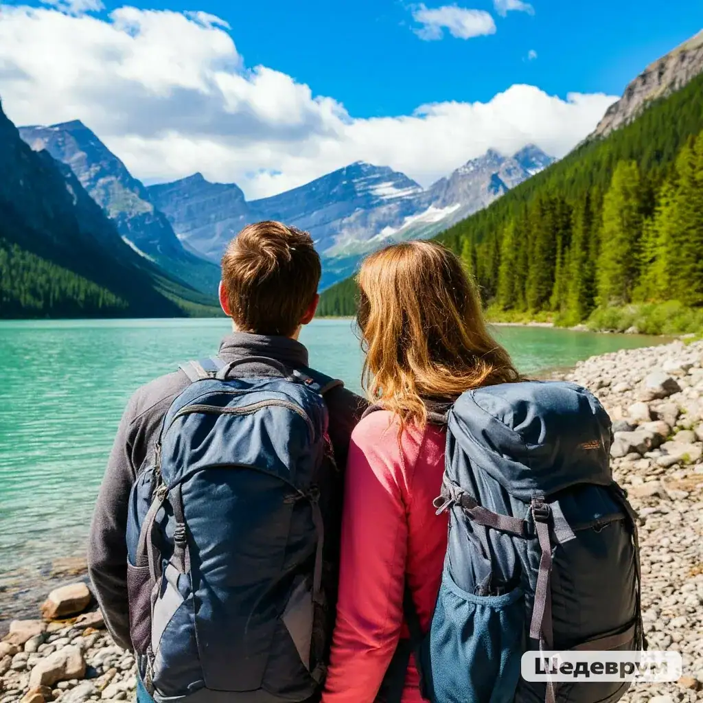
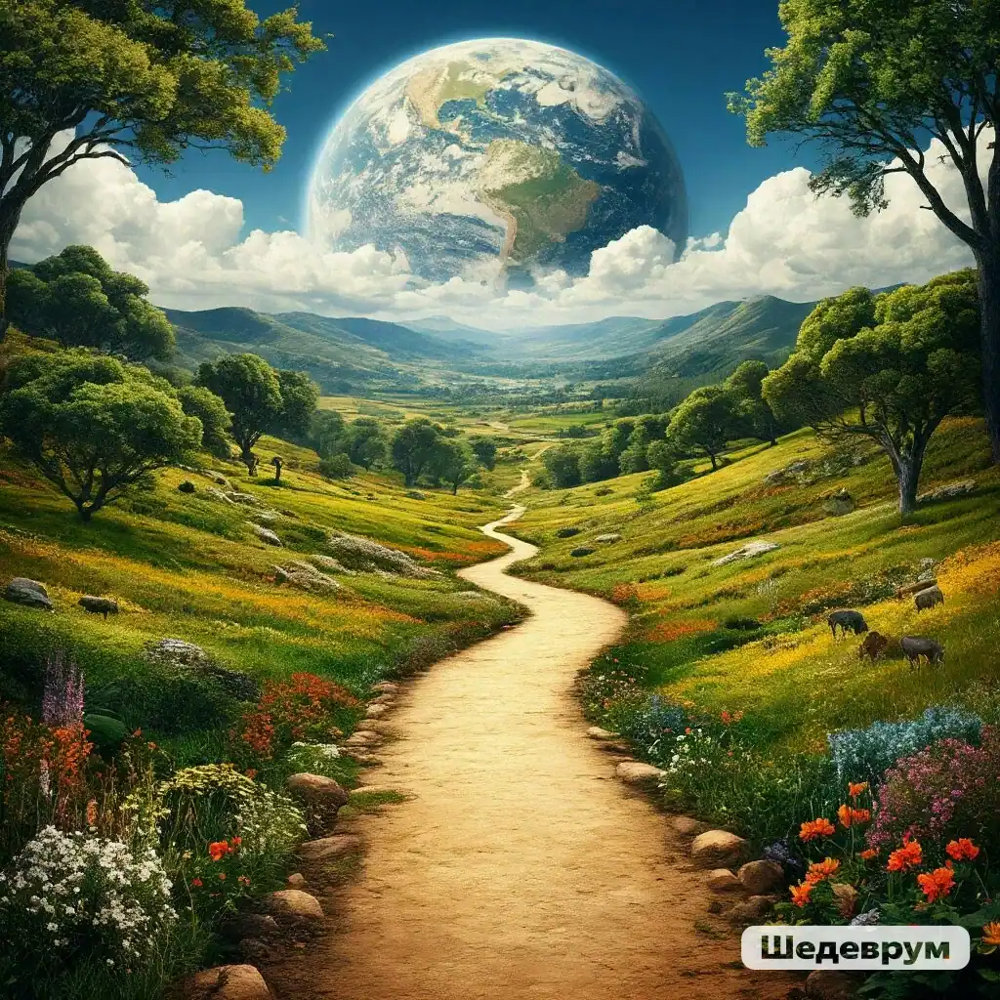

Фритрек и нулевой спринт: Подготовка к работе
Начало
Это было самое начало пути. На этом этапе важно было проникнуться
основами и настроиться на учёбу. И, возможно, подумать, как новые
знания могут повлиять на ваше будущее.
Было очень страшно... Казалось, что очень много отвлекающих факторов
в уже устоявшейся жизни будут мешать учебе, сделают её сложной и
нервной.
1 спринт: Я — чистый лист

Страх чистого листа
На первых этапах мы работали со страхами и сомнениями, которые часто
испытывают новички. Один из них — страх перед чистым листом. Это,
конечно же, намного сложнее, чем боязнь куска бумаги. Часто за этим
ощущением скрываются более глубокие вопросы: с чего начать? а вдруг
будет слишком сложно? что, если я не справлюсь?
Начинать проект с нуля - это всегда ответственно и тревожно. И не
важно опытный ты или нет... Но для новичка, который еще не проходил
весь путь целиком - это МегаСтрах, который приходилось побеждать
только целиком погрузившись в работу.
1 спринт: А если не получится?
Первые успехи
Первый проект — позади! Но это всё ещё самое начало пути. Радость
могла быстро померкнуть и смениться ожиданием провала. Или вы,
наоборот, могли вдохновиться успехами и поверить в себя.
Безусловно, когда ты сдаешь свой первый проект - чувствуешь себя
победителем, но с каждой новой темой в тренажере приходило
осознание, что не время расслабляться...
2 спринт: Погоня за идеалом
Рабочий процесс
На этом этапе вы уже достаточно разбирались в основах вёрстки, чтобы
понять, как много ещё впереди. Вы могли попытаться погнаться за
идеалом и понять, что он недостижим. А, может, вы вовсе и не
подвержены перфекционизму и вместо того, чтобы сделать идеально,
старались просто сделать.
Перфекционизм часто приводит к снижению результативности, поэтому
жизнь научила строить работу от эффективности.
2 спринт: О тех, кто рядом
Работа в коллективе
Всё это время вы были не одиноки (хотя, возможно, иногда и
чувствовали, что одни против целого мира). Вас окружали
одногруппники, команда сопровождения и просто близкие люди, которым
можно пожаловаться, если очередной макет просто так не поддавался.
Осваивать что-то новое легче, когда рядом есть единомышленники, не
правда ли?
Коллектив единомышленников, соревновательный дух в коллективе очень
сильно мотивирует и облегчает выполнение даже самых трудных тем. У
нас лучшая Когорта и лучший наставник!
3 спринт: Обходные стратегии

Поиск другого способа
На этом курсе вы постоянно решали разные задачи. В какой-то момент
вам могло показаться, что решения просто иссякли. Значит, пришло
время посмотреть на задачу под другим углом.
Далеко не каждую поставленную задачу можно решить стандартным
известным тебе способом... Понимание этого заставляет исследовать,
изучать, останавливаться и рефлексировать.
3 спринт: Когда опускаются руки

Концентрация
Во время учёбы часто возникает чувство, когда не знаешь, за что
хвататься. Вроде и проектную пора сдавать, и задачи хочется
порешать, и в теории получше разобраться, и жизнь не забыть пожить.
В такие моменты очень нужна концентрация. Вспомните, откуда вы её
черпали.
В моей жизни учеба всегда сопровождалась главными, важными
жизненными ситуациями... И в этот раз тоже совпала с очень
интересным и насыщенным событиями периодом.
«Сейчас я здесь»

Путь - результат
Сейчас вы уже очень много знаете о вёрстке. Но это только начало.
Во-первых, впереди ещё много материала про «красотищу». Во-вторых, с
окончанием курса учёба не заканчивается. Вёрстка — это целый мир. И
этот мир постоянно меняется. Познать его полностью не получится, но
это тот случай, когда важен сам процесс познания. Ведь часто путь —
и есть результат.
Несмотря на то, что уже много тем изучено, веры в собственные силы
пока нет, а значит нужно продолжать учить, исследовать и стремиться
погружаться в теорию верстки все глубже. Нет сомнений, что мир
верстки увлекателен, а его многообразия хватит не на одну жизнь...